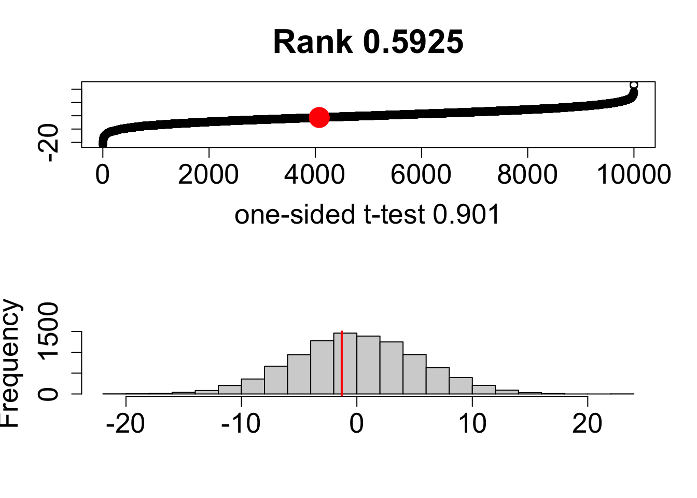

Challenge are designed to reinforce the code/lessons covered during the workshop. You can work in group, and discuss the solutions.
Let’s now define how big the difference could be if the samples were selected from the same distribution? IN this case inorder to sample from the same distribution:Let’s take the vector of marketable yield for all of the Maxifort present in the dataset as the “population distribution” and select two subsets, of sizes 10 and 10 from that vector. By doing that, we are modeling the assumption that distributions of two treatments/rootstocks for maxifort and non graft were exactly the same. If the originally observed difference is significantly larger than what we usually obtain using this assumption, then the latter is invalidated.
meta_df <- read.csv("input_data/tomato_grafting_metadata.csv", header = TRUE)
yield_df <- read.csv("input_data/tomato_grafting_yield_spad.csv", header = TRUE)
# merge metadata with yield data
yield_with_meata_df <- merge(yield_df, meta_df, by="plantID")
## let make random sample of yiled for maxifort and nongraft
maxi_yield <- yield_with_meata_df[yield_with_meata_df$rootstock=="Selfgraft", "marketable_yield_kg"]
ng_yield <- yield_with_meata_df[yield_with_meata_df$rootstock=="Nongraft", "marketable_yield_kg"]
ori.diff <- mean(maxi_yield)-mean(ng_yield) # diff between original samples
diff.sim <- numeric() # create an empty vector
ge.cnt <- 0 # how many times resampled diff is greater than original
n.sims <- 10000 # perform 10000 resamplings
for ( i.sim in 1:n.sims ) { # in each iteration:
x.sim <- sample(yield_with_meata_df$marketable_yield_kg, 20) # sample 30 yield data point
#... assign them to two samples and compute diff between means
diff.sim[i.sim] <- mean(x.sim[1:10])-mean(x.sim[11:20])
if ( diff.sim[i.sim] >= ori.diff ) {
ge.cnt <- ge.cnt + 1
}
}
## Plot
old.par <- par(mfrow=c(2,1),ps=20)
plot(sort(diff.sim),main=paste("Rank",
ge.cnt/n.sims),ylab="",
xlab=paste("one-sided t-test",
signif(t.test(maxi_yield,ng_yield,alt="greater")$p.value,3)))
points(n.sims-ge.cnt,ori.diff,
cex=4,col="red",pch=20)
plot(hist(diff.sim,breaks=20,plot=F),main="",xlab="")
abline(v=ori.diff,lwd=2,col="red")
In Challenge 2 we are going to practice subsetting and manipulating vectors.
First, open your r-davis-in-class-project-YourName and
pull. Remember, we always want to start working on a github
project by pulling, even if we are sure nothing has changed (believe me,
this small step will save you lots of headaches).
This chunk of code will create the vector you will use in your homework today. Check in your environment to see what it looks like. What do you think each line of code is doing?
set.seed(15)
hw2 <- runif(50, 4, 50)
hw2 <- replace(hw2, c(4,12,22,27), NA)
hw2## [1] 31.697246 12.972021 48.457102 NA 20.885307 49.487524 41.498897
## [8] 15.682545 35.612619 42.245735 8.814791 NA 27.418158 36.504914
## [15] 43.666428 42.722117 24.582411 48.374680 10.494605 39.728776 40.971460
## [22] NA 20.447903 6.668049 30.024323 34.314318 NA 10.825658
## [29] 46.676823 25.913006 26.933701 15.810164 26.616794 9.403891 27.589087
## [36] 34.262403 9.591257 27.733004 17.877330 38.975078 46.102046 25.041810
## [43] 46.369401 15.919465 19.813791 23.741937 19.192818 38.630297 42.819312
## [50] 4.500130Take your hw2 vector and removed all the NAs then
select all the numbers between 14 and 38 inclusive, call this vector
prob1.
Multiply each number in the prob1 vector by 3 to
create a new vector called times3. Then add 10 to each
number in your times3 vector to create a new vector called
plus10.
Select every other number in your plus10 vector by
selecting the first number, not the second, the third, not the fourth,
etc. If you’ve worked through these three problems in order, you should
now have a vector that is 12 numbers long that looks
exactly like this one:
final## [1] 105.09174 57.04763 92.25447 83.74723 100.07297 87.73902 57.43049
## [8] 92.76726 93.19901 85.12543 69.44137 67.57845Finally, save your script and push all your changes to your github account.
prob1 <- hw2[!is.na(hw2)] #removing the NAs
prob1 <- prob1[prob1 >14 & prob1 < 38] #only selecting numbers between 14 and 38
times3 <- prob1 * 3 #multiplying by 3
plus10 <- times3 + 10 #adding 10 to the whole vector
final <- plus10[c(TRUE, FALSE)] #selecting every other number using logical subsettingIn Challenge 3 we will be playing with the yield_data
data we worked on before.
Load your yield_data data frame with the read.csv()
function. Create a new data frame called surveys_base with
only the species_id, the weight, and the plot_type columns. Have this
data frame only be the first 5,000 rows. Convert both species_id and
plot_type to factors. Remove all rows where there is an NA in the weight
column. Explore these variables and try to explain why a factor is
different from a character. Why might we want to use factors? Can you
think of any examples?
CHALLENGE: Create a second data frame called
challenge_base that only consists of individuals from your
yield_data data frame with weights greater than 150g.
#PROBLEM 1
surveys <- read.csv("data/portal_data_joined.csv") #reading the data in
colnames(surveys) #a list of the column names ## [1] "record_id" "month" "day" "year"
## [5] "plot_id" "species_id" "sex" "hindfoot_length"
## [9] "weight" "genus" "species" "taxa"
## [13] "plot_type"surveys_base <- surveys[1:5000, c(6, 9, 13)] #selecting rows 1:5000 and just columns 6, 9 and 13
surveys_base <- surveys_base[complete.cases(surveys_base), ] #selecting only the ROWS that have complete cases (no NAs) **Notice the comma was needed for this to work**
surveys_base$species_id <- factor(surveys_base$species_id) #converting factor data to character
surveys_base$plot_type <- factor(surveys_base$plot_type) #converting factor data to character
#Experimentation of factors
levels(surveys_base$species_id)## [1] "BA" "DM" "DO" "DS" "NL" "OL" "OT" "OX" "PB" "PE" "PF" "PH" "PI" "PL" "PM"
## [16] "PP" "RF" "RM" "RO" "SF" "SH" "SO"typeof(surveys_base$species_id)## [1] "integer"class(surveys_base$species_id)## [1] "factor"#CHALLENGE
challenge_base <- surveys_base[surveys_base[, 2]>150,] #selecting just the weights (column 2) that are greater than 150Why Unbiased Sampel Varince is better estimator of variance?
Sample variance: Simply defined as average squared deviation from the mean (also determined from the same data),where x is defined from our sample. If you noticed does approximate population variance (2), and thus is an estimator, but it is not an optimal one. The quantity defined in (5) is a variance of the sample considered as a whole population, and is known as “biased estimator of variance”; the source of the bias is that the sample itself (its mean in particular) may fluctuate away from the true underlying distribution due to random sampling. The unbiased sample variance,
(1) Sample Mean \[\bar{x} = \frac{1}{n}\sum_{i=1}^{n}x_i\]
(2) Biased Sample Variance \[S_{n}^{2} = \frac{1}{n}\sum (x_{i} - \bar{x})^{2}\]
(3) Unbiased Sample Variance \[S_{n-1}^{2} = \frac{1}{n-1}\sum (x_{i} - \bar{x})^{2}\]